Disjoint Set Union - Module 1 (An Introduction-Part II)
Lecture - 17
Disjoint Set Union - Module 1 (An Introduction-Part II)
(Refer Slide Time: 0:17)

Welcome back to the second part of the first module on ‘Disjoint Set Union.’ Recall that we were working with the disjoint set union data structure, where our goal is to maintain a collection of disjoint sets over a fixed universe of ‘n’ elements, and every set is identified by a unique representative element.
Because these sets are disjoint, if an element is a representative, it represents only one set. There is no ambiguity. We want to support the ‘find’ set and ‘union’ set operations, where the ‘find’ set takes one element as input and returns the representative element of the set that this element belongs to. The ‘union’ set takes 2 elements as the input and it merges the 2 sets that these elements belong to.
It could happen that these 2 elements belong to the same set, in which case, this is a trivial union, and no actual work needs to be done. If this went by too fast, I hope that you have actually had a chance to watch the previous part of this module, which motivates this data structure a little bit through an example of how it can be used to maintain, for instance, the connected components of a graph and we go through basically what I just said, but a little more slowly.
If you have not seen that one, it may be advisable to watch that first. In this part, our focus will be on actually building out this data structure – actually implementing these operations. Let us start at the beginning.
(Refer Slide Time: 01:41)

Remember, we said that at the beginning, we have these ‘n’ elements and we have their representatives as being really uniquely identified because every element is a singleton and it can only represent itself. There is really no choice. Now, if you are already thinking about the implementation, then a very natural way to implement this would be to have an array, which stores the values of the representatives.
We could declare a parent array or leader array, which basically has the following property. The ‘i’th element of this array will tell us the value of the representative element of the set that ’i’ belongs to. This is a very straightforward thing to do and just to account for indexing issues because the ‘i’th element in an array is going to be indexed by ’i-1.’
I would typically want to declare an area with ‘n+1’ elements so that I can freely talk about the element in the array that is indexed by ‘i’ having the information about the leader of the set that ‘i’ belongs to. This is a small detail – does not really matter – you could also work with an array of length ‘n’ but in that case, in your code, you just have to account for adjusting the indices appropriately. I just feel that this is more natural to read off and we will see that when we get to the actual code.
But for now, hopefully, the semantics of the array is clear, to begin with. The array will be initialized in this fashion, with the first element just being 1, the second element being 2, and so on because every element is simply its own leader. Let us see what happens when we do a union.
(Refer Slide Time: 03:22)
 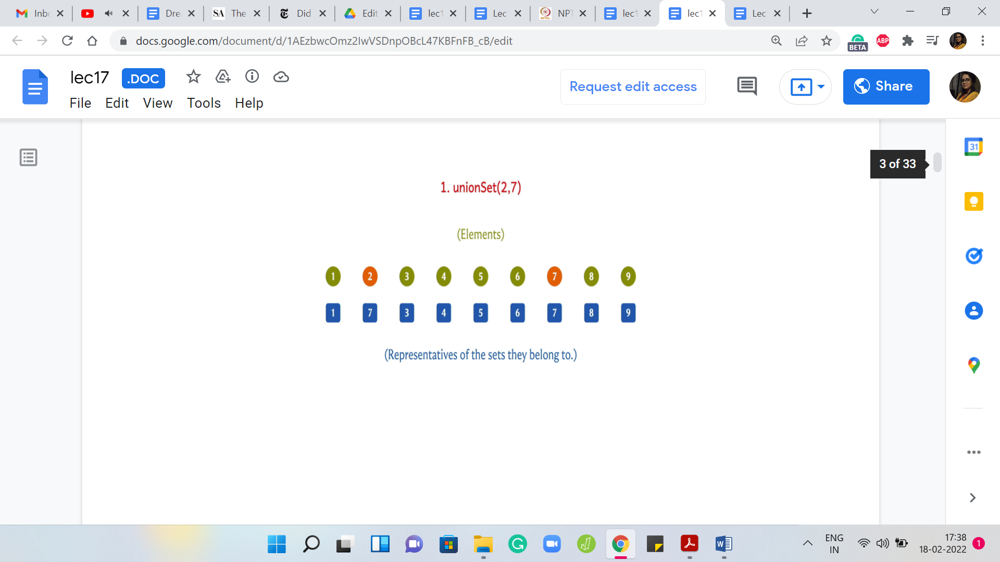
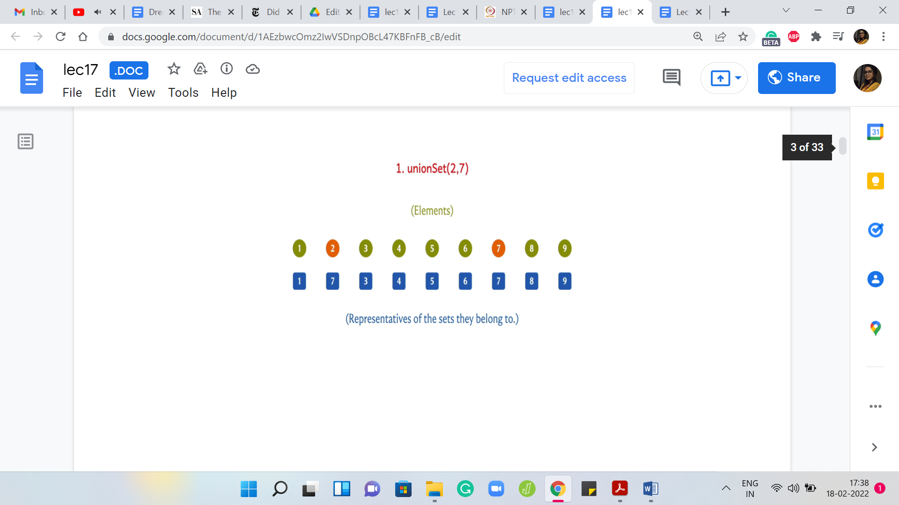
Suppose we take the union of 2 and 7, then either we want to update the leader for 2 to 7 or we want to update the leader for 7 to 2. This is all that we need to do because we are merging 2 singleton sets here. We will come back and think about what the algorithm has to do in general. But here physically, it is enough for me to just change the leader value of 2 to 7 because the only element in the set that contains element 2 is element 2 itself. This is the only update that I need to do if I want to make 7 the new leader.
(Refer Slide Time: 04:04)


Now, let us say that we have to take the union of 5 and 6. Just as before, I am going to change the leader of the set 5 to 6. This is going to signify the fact that 5 and 6 have now been merged into a single set.
Let us say that the next union operation is between 5 and 4. Once again, I can achieve this by updating the leader element of the set 4 to 6. I could have equally achieved this by changing the leader elements of 5 and 6 to 4. But I can just visibly see that this is less work. I am going to do it this way. Once again, we will come back to how would you implement this as a general algorithm. This is something that is not yet clear.
(Refer Slide Time: 04:48)


But let us just do a couple of more examples here. Suppose you had to take the union of 3 and 6. Once again, I can achieve this by changing the leader for the element ‘3’ to ‘6.’ So, this will have the effect of merging singleton set 3 with the set that 6 belongs to, which coincidentally is also represented by the element 6.
(Refer Slide Time: 05:09)
 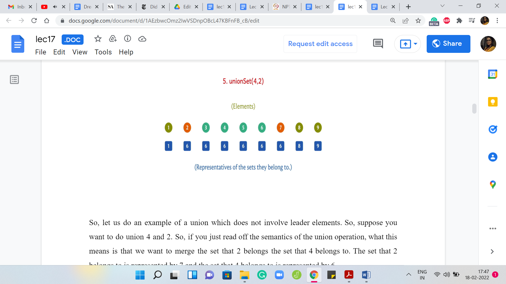
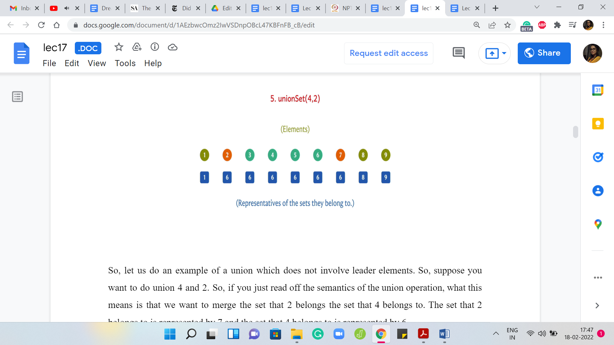
Let us do an example of a union, which does not involve ‘leader’ elements. Suppose you want to do ‘union’ 4 and 2. If you just read off the semantics of the union operation, what this means is that we want to merge the set that 2 belongs to with the set that 4 belongs to. The set that 2 belongs to is represented by 7 and the set that 4 belongs to is represented by 6.
These sets are the sets 2 and 7 on the one hand, and 3, 4, 5, 6 on the other hand. These are the 2 sets that we want to merge. Notice that this merge is equivalent to merging the leaders. It is equivalent to taking the union of 6 and 7 and one way to implement this merge is to either change the leaders for all the elements in the set represented by 6 to 7 or to change the leaders of all the elements represented by 7 to 6.
If you ask me which way I would prefer to do it, given that I can visibly see the sets right here, it is clear that I would prefer to change the leaders of 2 and 7 to 6 as opposed to changing the leaders of 3, 4, 5, 6 to 7 because the latter just feels like more work. However, what would a general algorithm do? Remember, that all you have is access to this array of representatives and now along comes the request for a union.
You are supposed to take the union of 4 and 2. By looking up the representative array, you can quickly figure out in constant time that the representative for the set containing 4 is 6, and the representative for the set containing 2 is 7. You can get this information just by looking up the representative array or the parent array.
But knowing that these are the representatives, we know that the way to implement this union is to either change all 6’s to 7 in this representative array or to change all 7’s to 6. The only way that we know to do this is to actually go through the whole array. Even if we knew which change we want to make. Let us say we managed to track the sizes of the sets a priori.
We know that we want to change all 7’s to 6. But can we actually directly probe all the elements that are 7 in the representative array? There seems to be no way to quickly access exactly those elements. What we would be forced to do is to go through the whole representative array and yes, it is true that the number of updates we perform will be not too many. So, here is our first ‘change.’
Then we just trudge along and go through all of these other elements. We see that they are not 7. Now we see 7, so we switch it to 6. For the ones that are not 7, we do not need to do anything. That is the entire union set operation. What you would have to do is if you are taking the union of ‘i’ and ‘j,’ using one array look-up, you can figure out what are the representative elements of the sets that ‘i’ and ‘j’ belong to. Let us say that the representatives are some ‘x’ and ‘y.’
If ‘x’ happens to be equal to ‘y,’ you do not have to do anything. You can just go home. This just means that ‘i’ and ‘j’ were already in the same set. But if ‘x’ is different from ‘y,’ you have to either change every occurrence of ‘x’ in this representative array to ‘y’ or you would have to change every occurrence of ‘y’ to ‘x.’ This is essentially a way of saying that look, all the elements that were there in the set that ‘i’ belonged to, well we want to now signify that you belong to the set, which is represented by ‘y,’ which is the representative of the set that ‘j’ belonged to.
We either make those updates or we do it the other way. But whichever way we do it, even if one of those ways is cheaper in terms of the number of updates we make, just to be able to identify which updates we want to make, we will have to do a pass of the entire representative array. If we do it this way, we are going to get a perfectly valid algorithm and this merger will always happen accurately.
(Refer Slide Time: 09:11)

But let us take a look at the complexity of these operations if they are implemented this way. The ‘find’ set is completely straightforward. We just have to look up the value in the representative array. That is just constant time. But ‘union’ set in general will involve one pass over the representative array. Every time we do a union, it is going to cost us ‘order n time.’ It is a linear-time operation.
Sometimes, you may get lucky. If ‘i’ and ‘j’ happen to be in the same set then there will be to find set calls which will detect that and you do not have to do any work. But in the worst case and typically most of the time, you will end up spending linear time doing your unions. Now, it turns out that this is not quite fast enough for the applications that we will be looking at and therefore we need to worry about doing better.
(Refer Slide Time: 10:09)
 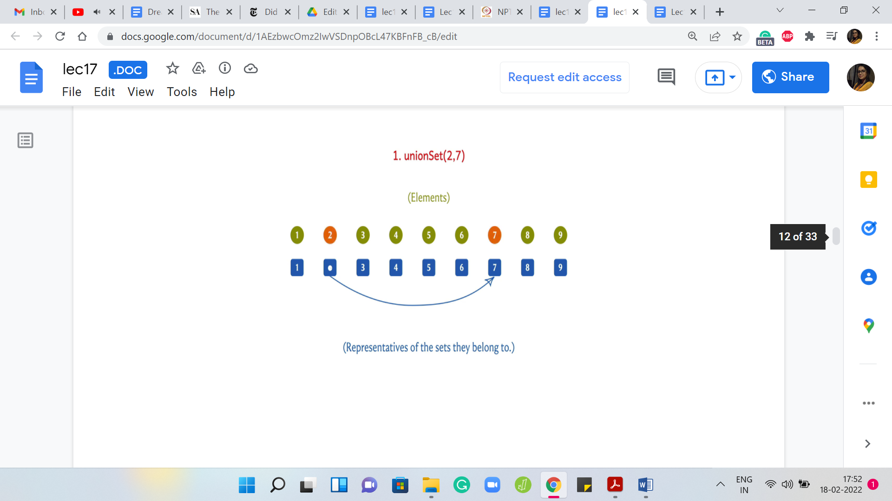
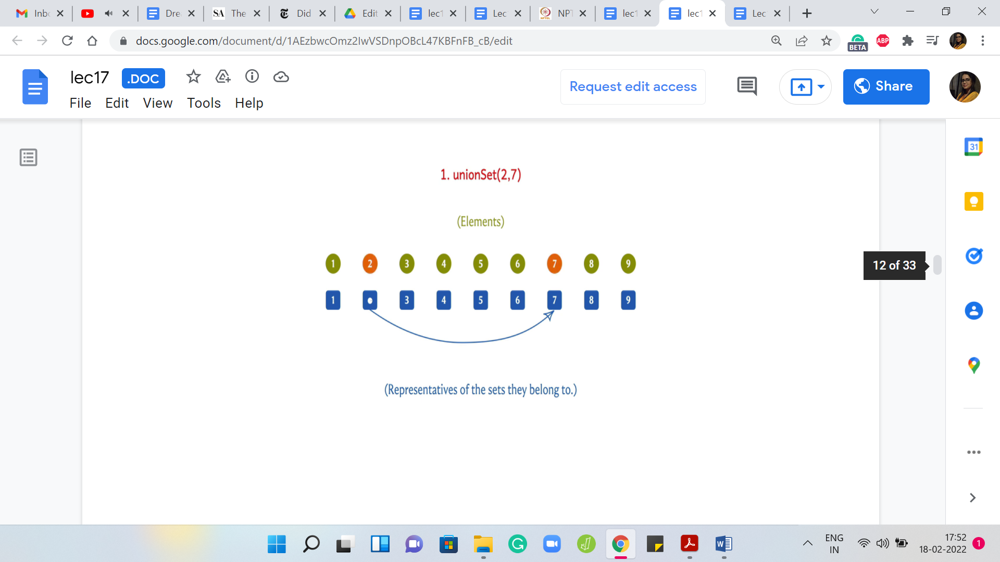 

 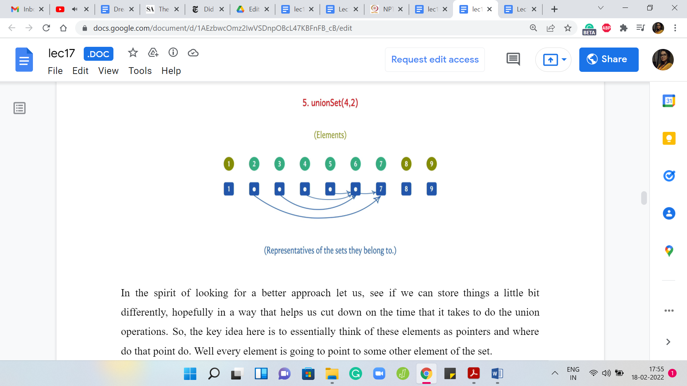
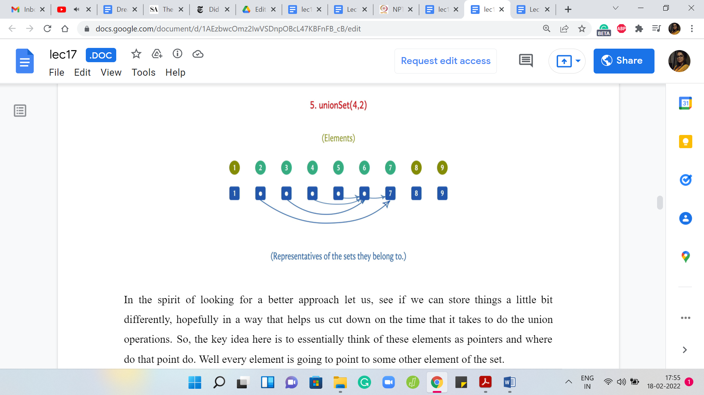
In the spirit of looking for a better approach let us see if we can store things a little bit differently, hopefully, in a way that helps us cut down on the time that it takes to do the union operations. The key idea here is to essentially think of these elements as pointers. Where do they point to? Every element is going to point to some other element of the set.
When you want to find who is the leader of the set that you belong to, hopefully, you can follow these pointers. Let us say that you want to find a set of ‘i.’ You go to the ‘i’th entry in the array and it is pointing to let us say ’j’ and then ‘j’ is pointing to ‘k.’ You just follow these pointers till you get stuck and, hopefully, the way this is designed is that you get stuck when you arrive at the leader element and that is the information that you want to output.
For this to actually work out, you will want the leader elements to point to themselves because that is when you get stuck. If you are a leader element at any stage, then the pointer corresponding to that element is just going to point to itself. In the beginning, when every set is a singleton set, every pointer is a pointer to itself because they have nobody else to point to. This is the natural thing that you do.
But as union operations come along, these pointers are going to evolve and if you walk through an example, as we will do here, you will see that visually this is going to evolve in a tree-like fashion and that is a useful thing to aid your imagination. We are not going to explicitly use a tree data structure or anything. It is just going to be an array of pointers. But it is really helpful to see the sets evolve as trees.
Let us take a look at what happens when we do our first union operation here. As before, let us say we want to do a union on 2 and 7. Initially, 2 was pointing to itself and 7 is also pointing to itself. Now what we want to do is, essentially carry out this union by saying, look, let us have the leader of the first set point to the leader of the second set, or you could also do it the other way.
At the moment, let us just say we make this choice arbitrarily. The leader of the set that 2 belongs to is just 2. Similarly, the leader of the set that 7 belongs to is just 7. Let us have 2 become a pointer to 7. That essentially glues together 2 and 7 in one set. Now, let us say that we want to do the union for 5 and 6. Very similarly, let us say that we have 5 now pointing to 6. Now, let us say we want to do the union of 5 and 4.
What are we going to do here? The algorithm is the following. You basically look up the leaders of these two elements. You can do that by running the ‘find’ set and remember, we briefly talked about how the ‘find’ set might work in the setting. When you want to do the ‘find’ set of ‘i,’ you just follow the pointers till you get stuck and you have information about your leader. We will come back and talk about the complexities of these operations.
But for now, just assume that you can actually execute them. When we want to merge 5 and 4, we discovered that the leader element for the set containing 5 is 6 and the leader element for the set containing 4 is just 4. Let us have the leader of the set ‘4’ point to the leader of the set containing element ‘5.’ We are going to have a pointer that looks like that.
Similarly, if we were to merge 3 and 6, the same story plays out, and let us say that we decide to have the leader of the set containing ‘3’ point to the leader of the set containing 6, which just happens to be 6 in this case. Suppose we are doing a union between 4 and 2. Once again, none of these elements are representatives. But if we run a ‘find’ set, we see that the leader of the set that 4 belongs to is 6, and the leader of the set that 2 belongs to is 7.
We are going to have either ‘6’ point to ‘7’ or ‘7’ point to ‘6.’ Either of these would work. Let us say that we have ‘6’ point to ‘7.’ So, 7 is the new leader element, and these sets are now merged. Now, you could think about, whether we could have done it the other way. You could also think about: Do we really need to find the leaders? Cannot we just, for instance, draw a pointer from 4 to 2? Would that not work?
These are good questions to ask and I would suggest that you spend some time exploring them thinking about other ways in which you could implement this pointer-based approach. In the meantime, let us go ahead and analyze the complexity of the algorithms that we just described. In fact, let us just recap the algorithms, to begin with, just to make sure that we are on the same page with respect to how they work.
(Refer Slide Time: 15:07)

First, let us say we want to perform a union of ‘i’ and ‘j.’ Then we said that we are going to invoke ‘find’ set on ‘i’ and ‘j.’ Let us say that we have discovered that the leader element of the set that ‘i’ belongs to is ‘x,’ and the leader element of the set that ‘j’ belongs to is ‘y.’ Now what you could do is simply make sure that either ‘x’ points to ‘y’ or ‘y’ points to ‘x.’ Either way, this will achieve what you want, which is that now every element in the set that ‘i’ belongs to will eventually get stuck at ‘y’ as the leader element or the other way around, which is essentially to say that all elements in A ∪ B, where A and B are the sets that ‘i’ and ‘j’ belong to respectively, essentially get merged and have a common leader element.
So, let us say that we settle for ‘y’ pointing to ‘x.’ The parent of ‘y’ is now ‘x.’ You can do it the other way, as well as of now not making a distinction between these 2 possibilities. But we will in due course. But that is a bit of a spoiler. Let me not go into that for now.
Notice that the complexity of the ‘union’ depends on the complexity of the ‘find’ set. Now, in the previous implementation, the ‘find’ set was completely straightforward. You just had to go and look up the parent array or the representative array to figure out who is the ‘leader’ element of the set that ‘i’ belongs to. But now if you try to do this lookup, you might find that you get stuck, which would happen if ‘i’ is a leader element in its own right. Then you get a pointer to itself.
That is what I mean by getting stuck or you do not really discover an element directly, but you discover a pointer to some other element. What you would have to do is follow these pointers for as long as you do not get stuck. When you do eventually get stuck, at that point, you could return the element at which you got stuck.
Notice that you will get stuck at some point because you are working with a fixed collection of elements. Notice the way in which these pointers are introduced, quite importantly you will never have a cycle. This is something that you can show formally. You never go around in a loop and you will always end up at the leader element for the set that ‘i’ belongs to.
Again, in the description that we have in these videos here, we are not really digging into formal proofs of the correctness of either the mechanics or the complexities. These are all fairly informal and high-level overviews. If you are really interested in the theory, I would definitely recommend looking up the book chapter that is been linked to in the description of this video.
But for now, hopefully, this is enough to get a sense of how the data structure works. We just want to get to the point where we understand enough of it to be able to implement it and just know what the complexities are. As I said, the emphasis here is not so much on the theoretical aspects, but they are definitely very interesting and worth knowing in their own right.
Perhaps you know them already from a previous course in which case that is awesome. But if you do not and you are curious, then there are resources that you can certainly check out. With all of those disclaimers out of the way, these are the two algorithms for a union set and find set and now let us think about the complexities of these operations.
(Refer Slide Time: 18:32)

The complexity of the union set is, well, you have to adjust this pointer – make sure that either ‘x’ points to ‘y’ or ‘y’ points to ‘x.’ That is a simple constant time operation. But it also has two invocations for ‘find’ sets. The complexity of the union set depends on the complexity of the ‘find’ set. But once you have done that, then it is really a simple constant time operation.
What about the ‘find’ set? You are following these pointers around and I would really encourage you to take a pause here and try and come up with a sequence of unions that would force find set to take a lot of time. Do take a moment here to figure that out and come back when you have a guess of your own for the complexity of find set in the worst case.
If you thought about that, you might have been able to come up with an example that really pushes find set to take order ‘n’ time. This will only happen once your sets have developed sufficiently in the first few calls to the union. Assuming you are starting with all singletons, your sets are going to be fairly small. All of those find set operations will be cheap just because the sizes of the sets are cheap.
But once the sets start becoming bigger, you might end up doing your pointing of parent pointers in such a way that the trees that you develop have a large height. Basically, it is going to take a lot of time to get to the root. One way to improve this situation is if you could somehow guarantee that you are always building out shallow trees where the distance of any node to the root is somehow under control.
As we said, it is not very hard to come up with a sequence of operations, which forces find set to take order and time. But let us see if we can do better. One natural heuristic is something that we hinted at in the previous part of this module. We were saying that imagine that you are trying to do a merger between two companies. It is only natural that the leader of the larger company will somehow persist.
Now, I do not want to simply think of this in terms of the sizes of the sets that are involved, but rather, in terms of the depth of the trees that we have developed around these sets. Remember that as you are building these pointers out, you are really developing a tree-like structure. Let us say that you are trying to merge 2 sets, where the corresponding trees have depths D1 and D2. Now, if D1 is smaller than D2, would you want that the tree which has depth D1 to become a subtree of the tree, which has depth D2?
In other words, would you want to have the leader of the first set point to the second set, or would you want to have it the other way around? Think about which one is better in terms of giving you a tree with as small a height as is possible once you are finished. Think about that for a second and once again, come back when you are ready. Hopefully, you had a chance to think about this. Let us try and visualize the situation that is been presented to us.
(Refer Slide Time: 21:47)
 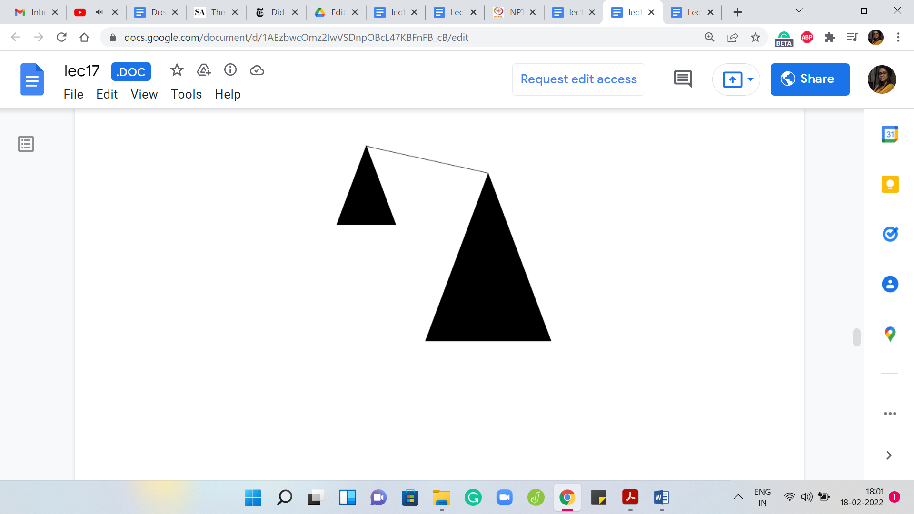
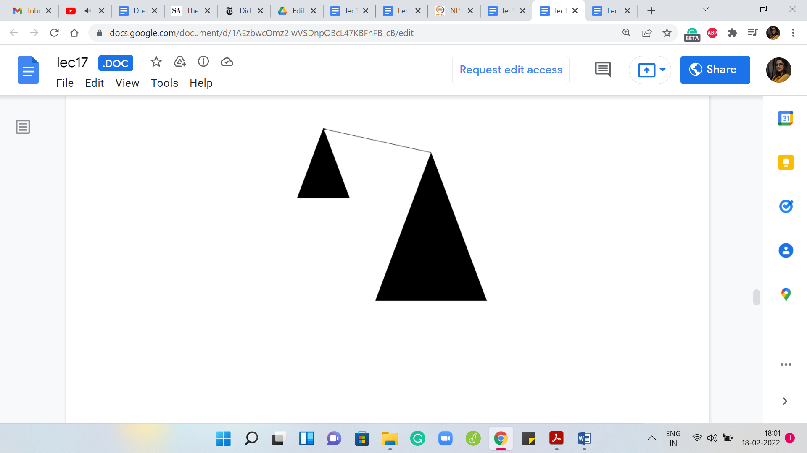 
Let us say we have this abstract cartoon for the 2 sets that we are working with, with these triangles, kind of representing the corresponding tree structure on their pointers. Let us say that the heights of the triangles are representative of the depths of the corresponding trees. Remember that the depth of a tree is sort of the longest path that you may have to endure in going from any vertex to the root.
The longest route-to-leaf path would be the depth of the tree and what we were presented with was 2 choices. We could either have the smaller tree point to the bigger one, which is to say that the root of the larger tree in terms of the ones that have the greater depth is the new leader. Or we could go the other way, where we say that the leader of the smaller tree, the underdog element, is the new leader. The larger trees route points to the root of the smaller tree.
It could work out in one of these 2 ways. But notice that when we run with the second option what happens is that the overall tree that you obtain has a height one more than the tree that you were working with before. Because you could take the longest path that you had to endure in the tree that had a higher depth and that path is now going to get extended by one.
This new tree is taller than the one that you were working with before. On the other hand, if you absorbed the smaller tree into the bigger one, then the paths in the smaller tree do get elongated by one. But because the other tree was bigger anyway, the overall depth does not increase. It seems like a fairly natural heuristic to say that we will make the root of the shallower tree a child of the deeper one. We have the root of the smaller tree points to the root of the bigger one.
Some people would call this the ‘union by depth’ procedure. Whenever you are taking union, try to do it this way. To actually implement this, you will have to keep track of the depths of the trees as you go along. This is not very hard to do. It is just a little bit of extra book-keeping. But you can argue that if you do this then the heights of the trees that you encounter will always be bounded by log ‘n.’
I will not go through the argument here, but it is really cute proof. If you want to do it formally, you can do it using the framework of induction. Once again, you can look up the book chapter that is been linked to, if you actually want to go over the proof. This proof is not particularly difficult and if you are curious, you should definitely check it out.
What this ensures is that the complexity of your union operations stays the same because it is still constant + the complexity of the find set operations. But the find set operations now will never take more than log ‘n’ time because your trees maintain the invariant that the depth is always at most log ‘n.’ This is already a pretty nice improvement. But it turns out that you can do even more.
(Refer Slide Time: 24:55)

Let me describe another really popular heuristic called ‘path compression,’ which says the following. Whenever you are doing find set, you are anyway walking up the stream of pointers. Now, you know that every element that you encountered on this path from the current node that you started off with all the way to the root, all of these elements have the root element as the parent. Why do not we just upgrade all of these elements so that they directly point to the root?
That will make this a shallower tree potentially and it will definitely speed up future find set queries not only for the current element but for any element that was there on the path from the current element to the root. Essentially, what we do is that we are going to sneakily update the parent pointers as we go through the journey from the current node to the root. It is not going to take any extra time – not in a substantial way – it is just probably going to be constant overhead from what you were doing before.
(Refer Slide Time: 26:02)


 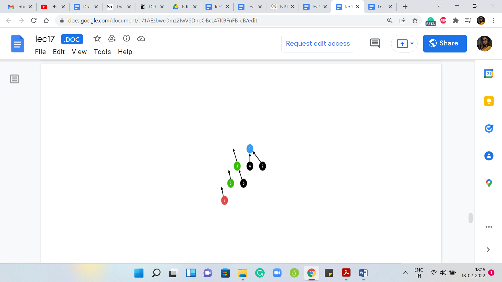
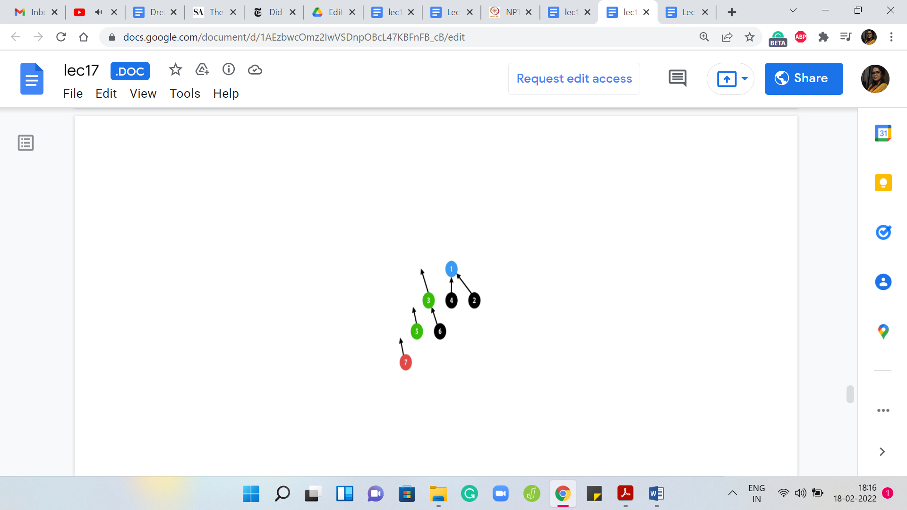 
In fact, let us just walk through an example so that it is clear as to what we are trying to do. Suppose you have the ‘find’ set invoked on element 7 here. Let us try to think of the ‘find’ set now as a recursive process. What we are going to do is basically return the current element if it is pointing to itself.
If it is a leader that is kind of the base case of the recursion. Otherwise, you are going to return the outcome of the ‘find’ set for your parent because that is really the answer. It is representative of the set that your parent belongs to. You could invoke find set on your parent. Let us do that.
But now to implement the path compression heuristic, we are actually not just going to return but once we have the information from this recursive call, we know who the leader element is, just before we are completely done, we just want to update the parent pointer of this element directly to the root of the stream. Let us see how that is going to work.
We are going to invoke find set on the parent of 7 because 7 is clearly not a leader element. We are going to temporarily just detach the parent pointer because we know that we want to update it. That directly points to the root. At this point, we still do not know what the root is; The program is going to invoke find set on the parent of 5.
Because, once again, 5 is not a leader element. We are going to get into this recursive invocation of find set on 3 and we are going to also detach the parent pointer for 5 because we know that we do not want to point to 3 anymore. We want to directly point to the root and notice that we still do not know where the root is.
Hopefully, we are going to find out in the next step. When you come to 3, once again, 3 is not a leader element itself. It is going to invoke find set on its parent, which is 1, and once again, it is going to set aside its parent pointer in the hope of pointing it to the root of the tree once the find set invocation returns an answer.
But now find set invocation has actually hit the base case. So, 1 is the root of this tree. It points to itself even though that point is not drawn explicitly. Your recursion is going to bail out at this point and it is going to say: Okay, I can return 1. Now we do a sort of a backtrace. We climb back down the tree and we know that when 3 invoked find set, it was basically waiting for the outcome of this call so that it could point to whatever the answer was.
Now 3 will point back to 1. For 3 nothing changed, but we could not be sure about that until we went through the process. Let us put the pointer back in place. For 5, something more interesting happens. It was pointing to 3 before but now that find set has done its job and you know that the answer is 1. We can now point 5 directly to 1 instead of what it was pointing to before, which was 3 and we can also do this for 7.
For 7 was previously pointing to 5, but now we know that it might as well point to 1. That is the path compression heuristic and if you want to see it in code, essentially what you would normally do if you were just implementing raw find set without path compression is that you would say if ‘i’ is not pointing to itself, then return find set of the parent of ‘i.’
But now since we want to do path compression, we have this small extra step here which is to say that we take the output of the ‘find’ set invocation and we update the parent pointer of ‘i’ to whatever was outward by the find set call. Since this is happening in recursion, as we saw in this example, this will update the parent pointer not only of the element that you started off with but in fact, every intermediate element that you encounter in your journey to the root.
Maybe there are no elements on this journey. Maybe there are very many of them. It is hard to predict what this looks like. But it definitely feels intuitive that you have gained something. In this example, for instance, any future calls to find set on 7, 5, or 3 would actually run in constant time.
Now, the question of estimating how much of an improvement this really is, what are your gains from doing this is actually quite non-trivial and if you are really interested and you have some time, then you could roll up your sleeves and look at the arguments that are given in this book chapter from Erickson's algorithms, where there is a fairly detailed analysis of how much of an improvement is guaranteed by path compression.
(Refer Slide Time: 31:06)

For us, it is enough to know that this improvement actually gives us effectively constant time for both of these operations. I am using the word ‘amortized,’ which is to say that an individual operation may not run in constant time in the worst case. But if you do ‘m’ of these operations, then the total amount of time that you need is going to be ‘m’ times some constant.
Some of these operations may require a lot of time. You may have to do a sequence of climbs on some tree. But as you do this, every time you actually pay a price, you are improving your future. The calls that come in later become much cheaper for the hard work that you may have done at a certain step. Typically, the form of what actually happens is that you are going to have a few steps that may be expensive.
But this really cleans up the amount of work that you have to do later. Now, even this constant is not truly a constant. What you can argue is that this is some very very slow-growing function of ‘n.’ It is called the inverse Ackermann function. It is a very interesting function to study. But it is also fairly messy to describe. So, in the interest of time, I will not be even defining this function.
But the reason I am writing down order one here is: Because the inverse Ackermann function is such a slow-growing function of ‘n’ that it only takes values up to 4, I think, even if ‘n’ is very, very large, even in the billions. For contest programming for the kinds of values of ‘n’ that you are going to encounter, this function is definitely going to just be a very small constant. The behind-the-scenes statement is really the following.
(Refer Slide Time: 32:53)

If you have ‘M’ calls to find set – these could be direct calls to find set as is given by your query sequence or these could be calls to find set that are embedded inside the union algorithm – either way, if you are making ‘m’ total calls to find set, then all of that can be executed in time M x αn where α is this inverse Ackermann function. As we said, this is something that we do not need to worry about for the kind of values of ‘n’ that we will be working with.
So, M calls can be executed in order M time and that is what we mean when we say that it is constant amortized time per operation. If you are literally in the middle of a specific operation, the worst-case time may not be a constant. It may be that you are in a situation that is bad. But every time you go through a bad experience, you end up doing some amount of clean-up, which helps the future operations along.
Now the analysis of how exactly this intuition plays out is actually pretty non-trivial and it is a complicated argument. We will not really be getting into it. But if you are really curious about it, then if you have some time, please roll up your sleeves and look at the disjoint sets chapter in the text on algorithms by Erickson. It is again linked to in the description and you can find a fairly detailed analysis of how this bound actually works out.
That is what is going on with the ‘find’ set and with the ‘union.’ It is essentially composed of two calls to find set and then one pointer adjustment after comparing ranks.
(Refer Slide Time: 34:39)

In fact, that reminds me that I should say that these two heuristics play reasonably nice with each other. Remember, we had a union by depth heuristic before we talked about path compression. Now, when you do path compression, the way that you do the book-keeping for the depths of the trees, that might get messed up a little bit because your trees are becoming shallower and the depths may in fact reduce.
Generally speaking, it is a bit expensive to go and re-compute depth. We do not really re-compute depth but we just work with whatever information we have at hand. It turns out that all the claims that we have made work with this combination. Implementing depth in a slightly non-accurate way the best we can and combining it with path compression works out just fine.
This is sometimes called ‘union by rank and path compression.’ Just to keep in mind that the depth information that you are storing may not be reflective of the true depth because of the adjustments made by path compression. But it is still a valid upper bound on the depth of the trees that you are maintaining and it turns out to be a good heuristic to use.
That is essentially what we are going to do. Just to come back to the complexity of the union operation – you just have to compare the depths and update the depths whenever necessary. When you are merging 2 trees that have the exact same depth, then you would have to increment one of them by one. All of this is essentially constant time operations over and above the two calls to the ‘find’ set. Since the complexity of the ‘find’ set has already been accounted for, you can think of the union operation as really being a constant time operation.
I will still say constant time amortized because it has these find set invocations involved. But just know that it is the complexity of the ‘find’ set + a constant amount of work. That completes the description of all the algorithms that are involved in the disjoint set union data structure. Now, it is time to take a look at the implementation and we are going to do that in the final part of this module, which is in a separate video. So, I will see you there!